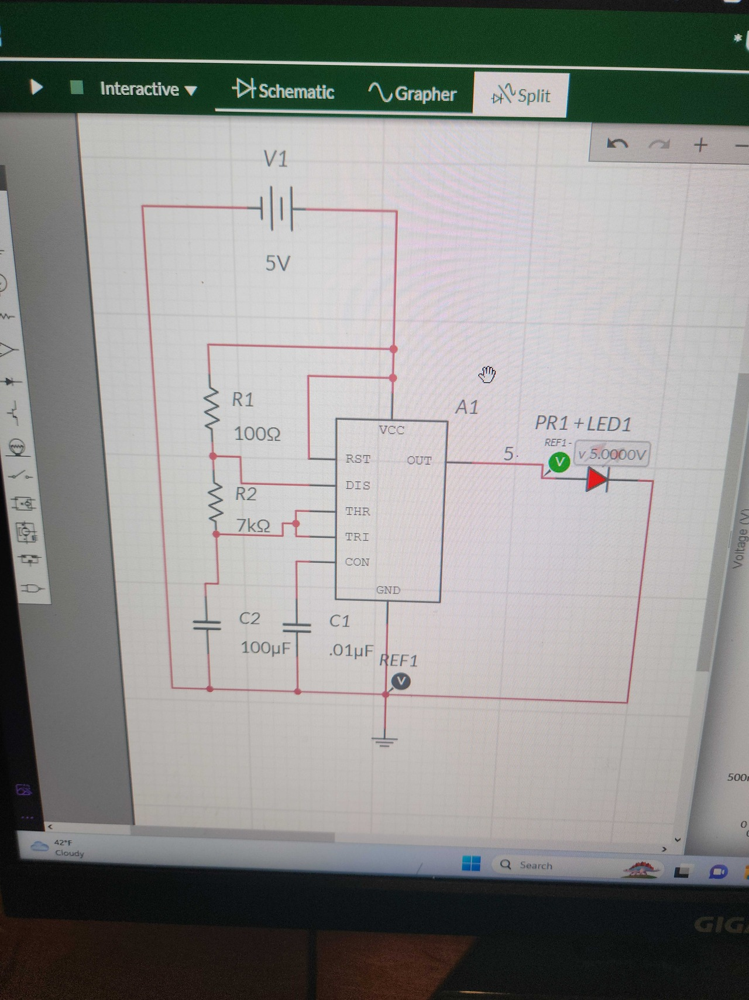

<br>
#### Week 8: networking
<p>
This week I learned about networking and IoT devices using the ESP32 I worked with Geoffery and Issac to build a game of laser tag where the esp 32 acts as a sensor/target to be used with an analog laser gun
</p>
<br>
<p><storng>Trouble with 555 timers</strong></p>
<br>
<p>
My main role in the project was to design and make the circuitry of the laser gun. We wanted to make the laser gun analog, because we felt like it would be better to be able to move it around and extend it without clunky wires attached to the sensors getting in the way. At first we decided to try red laser diodes and photoresistors. I designed the laser gun using a 555 timer so the laser was not constantly on. We wanted it to pulse. I first designed and simulated the circuit with multisim. The hard part is we wanted around a 1 hz frequency with a 50% duty cycle. This means the laser is on for 500 ms and then off for 500 ms. This is why I simulated it with multisim before building the circuit because it saved a lot of headache. I had to run a few dozen simulations to get the right capacitor and resistor values. I then went to the lab and made the circuit. I had to look up the 555 timers in the lab and look at the data sheet and translating my circuit diagram I made into actual wiring on the breadboard was difficult and took multiple attempts. At last I got it working and it was not perfectly one second because the exact values needed to get one second are not common values for resistors and capacitors so there was some error but it was close enough. In the future it would be nice to add some digital logic in order to switch between a one second pulse and a pulse of a time of the user's choice. This would require digital logic, two 555 timers and a potentiometer. Ideally the user's choice wouldn't go above approximately 50 Hertz because above this value to most people the pulse of the laser would be so fast it looks like the laser is always on.
</p>

<p><storng>Trouble with sensors</strong></p>
<p>
When we tested it out with the phototransistor we realized it did not detect the laser very well. We then tried several methods such as making a cone with aluminum to reflect light into the sensor eventually we decided to use an IR LED and IR phototransistor luckily with the design of the 555 timer it's easy to switch out LEDS/Laser diodes for another one the main circuit remains the same. This is still not ideal. Ideally we would have a larger sensor array and an IR laser diode that would make the detection more accurate, allow the player to aim better, and would allow the game to be played from further distances. Most of the trouble with this project came from the circuitry and all in all we found good solutions to most of the problems and with more time could develop this further with my suggestions
</p>
<p>To learn more about the networking aspect and the challanges and improvements to be made there see Geoffery's website</p>
<br>